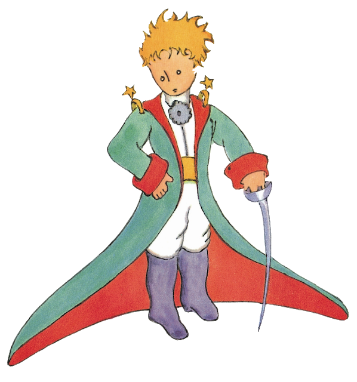
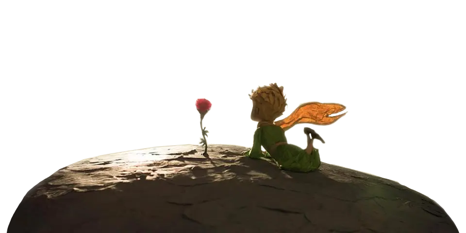

El principito
(En francés: Le Petit Prince) es una novela corta y la obra más famosa del escritor y aviador francés Antoine de Saint-Exupéry (1900-1944).
Es necesario trabajar y convivir con respeto a los demás, así como a uno mismo, porque en lo que tú flaqueas, la otra persona tal vez brilla, y viceversa. “Nada en el universo sigue siendo igual si en alguna parte, no se sabe dónde, un cordero que no conocemos ha comido, o no, a una rosa”.

"Sólo se ve bien con el corazón; lo esencial es invisible a los ojos".



 @PrincipitoHastaLasEstrellas
@PrincipitoHastaLasEstrellas